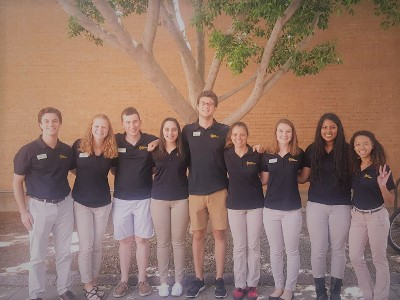

Leadership Role: Membership Engagement Coordinator, Fall 2017- Spring 2018
Enriched student ambassadors’ experiences with professional development and social events.
Built a peer mentorship program between upper and lower engineering classmen.
Leadership Role: High School Visits Coordinator, Fall 2016- Spring 2017
Facilitated high school teachers’ requests for engineering students to visit their classrooms and provide information to students via presentation and Q&A styles.
General Member Role:
Shared the ASU engineering experience at outreach, recruitment, and special events.
Conducted tours of the engineering facilities for prospective students and guests.

Tour Guide | Devils' Advocates
Jan 2016 - Apr 2018
Informed prospective students of the opportunities and benefits available at Arizona State University.
Created lasting impressions through personalized campus tours.
Conducted special tours for high school field trip groups, campus visitors, staff, and faculty.
Sparked middle school students' interests in renewable energy resource development.
Taught students to use the engineering design process to construct an orbital descent vehicle, solar-powered rover, solar oven, wind turbine, and water wheel.